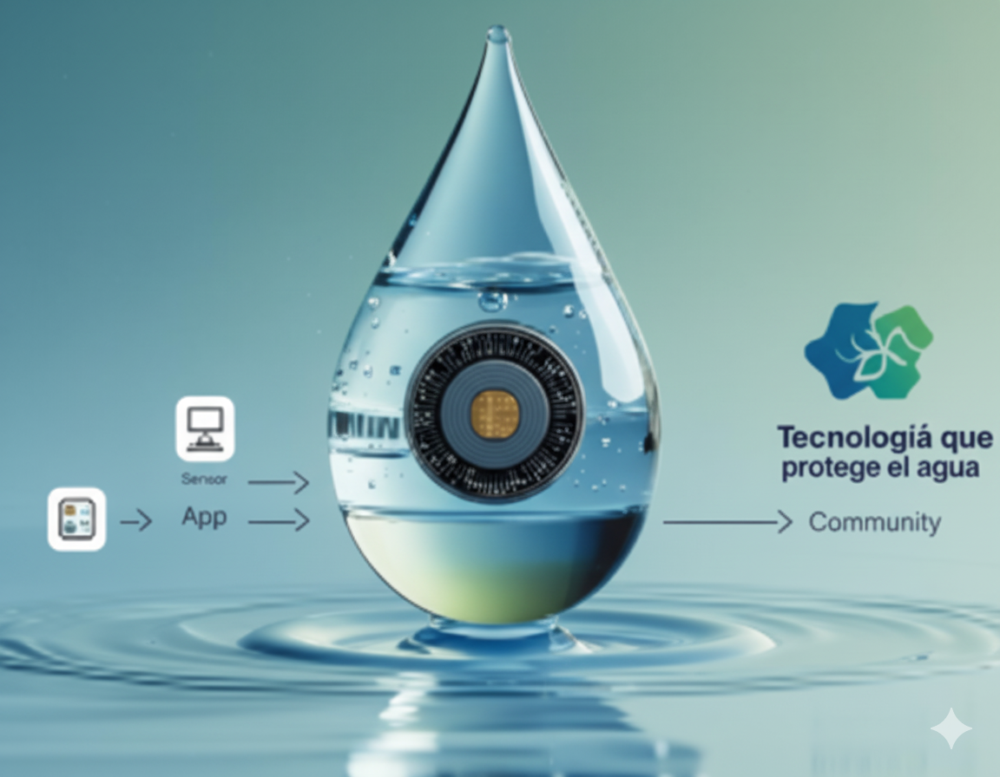

¿De qué trata esto?
Un sistema que permite monitorear en tiempo real la calidad del agua, usando sensores y una aplicación fácil de usar. Pensado para empoderar a las comunidades con información clara, alertas tempranas y herramientas para tomar decisiones que protejan su recurso más valioso: el agua.
